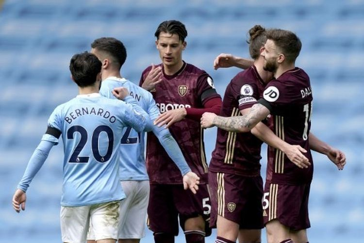

HASIL LIGA INGGRIS
Hasil Liga Inggris pada Sabtu (10/4/2021) malam WIB tak berpihak kepada sang pemimpin klasemen, Manchester City. Manchester City secara mengejutkan takluk dari tim promosi, Leeds United, pada laga yang termasuk dalam rangkaian pekan ke-31 Premier League, kasta tertinggi Liga Inggris, musim 2020-2021 tersebut. Laga Man City vs Leeds United yang digelar di Stadion Etihad itu berakhir dengan skor 1-2. Man City tak kuasa membendung motivasi tinggi yang ditunjukkan anak-anak asuh Marcelo Bielsa, pelatih Leeds United.